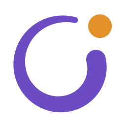
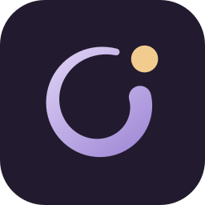

Taper + Spiral. Each logo plays once, then the amber seeker keeps a soft ripple. Replay restarts them.
The research system scholars and supervisors open every week.

flatThe research system scholars and supervisors open every week.

app icon